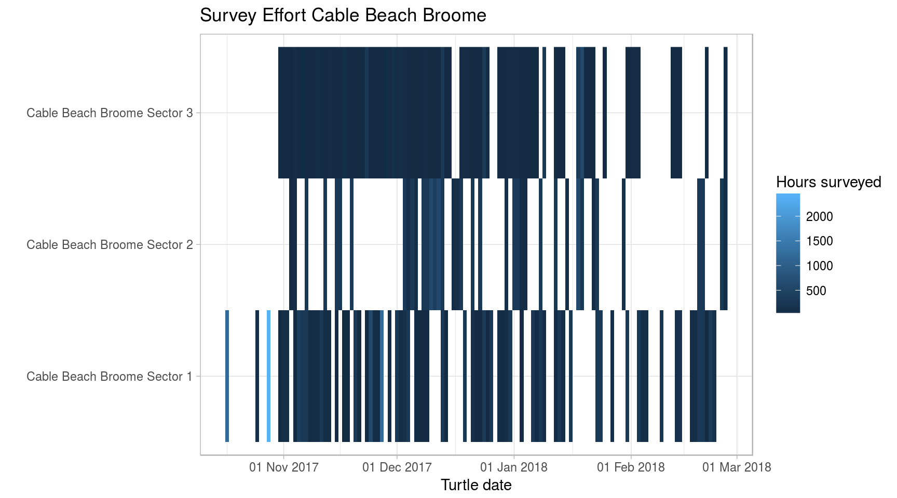
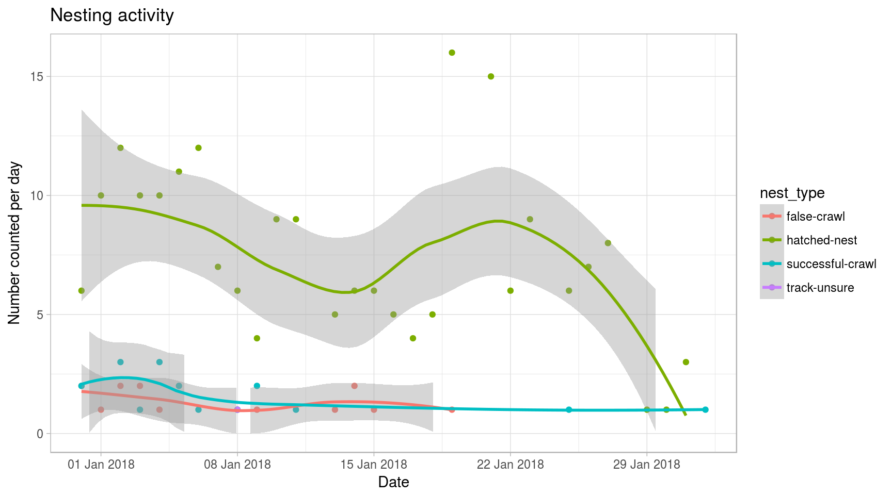
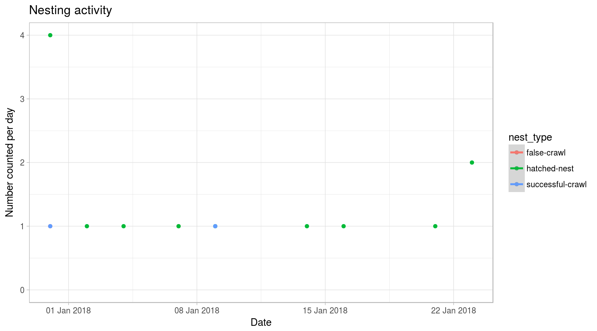
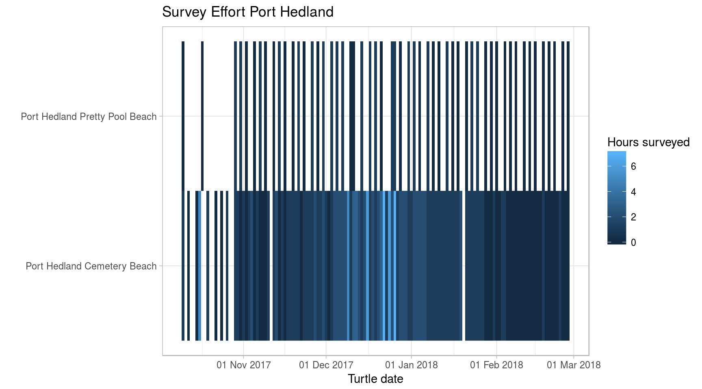

Data analysis - Producing insight from WAStD
Florian Mayer, North West Shelf Flatbacks WA
2018-05-08 08:01:23
Data
This section illustrates how to access data, and defines helper methods to filter, map, summarise, and plot data.
Once refined, these helper functions will become core wastdr functionality.
Caveat
- The data as shown is still pre-QA until this message disappears.
- Usernames are still hilariously wrong after matching the usernames (as submitted) to the actual usernames in WAStD. See the field
commmentsfor QA messages.
Load data
if (file.exists("tracks.Rda")){
load("tracks.Rda")
} else {
q = list(when__year__in = "2018")
track_records <- wastdr::wastd_GET("turtle-nest-encounters", query=q)
tracks_all <- parse_turtle_nest_encounters(track_records)
surveys <- wastd_GET("surveys", query=q) %>% parse_surveys()
save(tracks_all, track_records, surveys, file = "tracks.Rda")
}Filter data
To filter records to one area, we can either filter by area or site ID (once enabled), or simply filter by a bounding box. Additionaly, we’ll filter by date.
Site names and IDs are only correct at the time of writing. As they could change, please double-check the correct spelling of your own place names and their IDs in WAStD.
filter_2017 <- . %>% dplyr::filter(date > dmy("01/10/2017"), date < dmy("31/03/2018"))
filter_broome <- . %>% dplyr::filter(area_name=="Cable Beach Broome")
filter_broome_sites <- . %>% dplyr::filter(site_id %in% c(22, 23, 24))
filter_cbb1 <- . %>% dplyr::filter(site_name=="Cable Beach Broome Sector 1")
filter_cbb2 <- . %>% dplyr::filter(site_name=="Cable Beach Broome Sector 2")
filter_cbb3 <- . %>% dplyr::filter(site_name=="Cable Beach Broome Sector 3")
filter_eighty_mile_beach <- . %>% dplyr::filter(area_name=="Eighty Mile Beach Caravan Park")
filter_anna_plains <- . %>% dplyr::filter(area_name=="Anna Plains")
filter_port_hedland_sites <- . %>% dplyr::filter(site_id %in% c(35, 45))
filter_port_hedland_cemetery <- . %>% dplyr::filter(site_name=="Port Hedland Cemetery Beach")
filter_port_hedland_prettypool <- . %>% dplyr::filter(site_name=="Port Hedland Pretty Pool Beach")
filter_west_pilbara <- . %>% dplyr::filter(area_name=="West Pilbara Turtle Program beaches Wickam")
filter_delambre <- . %>% dplyr::filter(area_name=="Delambre Island")
filter_rosemary <- . %>% dplyr::filter(area_name=="Rosemary Island")
filter_thevenard <- . %>% dplyr::filter(area_name=="Thevenard Island")
tracks <- tracks_all %>% filter_2017Summarise and plot data
Data (all tracks or filtered subsets) are filtered to only fresh observations, then grouped and tallied by date, species and type.
Daily summaries are shown in wide form as tables, and (using long form) as timeseries plots.
species_by_type <- . %>%
filter(nest_age=="fresh") %>%
group_by(species, nest_type) %>%
tally() %>%
ungroup() %>%
tidyr::spread(nest_type, n, fill=0)
daily_species_by_type <- . %>%
filter(nest_age=="fresh") %>%
group_by(date, species, nest_type) %>%
tally() %>%
ungroup()
daily_summary <- . %>%
daily_species_by_type %>%
tidyr::spread(nest_type, n, fill=0) %>%
DT::datatable(.)
tracks_ts <- . %>%
daily_species_by_type %>%
{ggplot2::ggplot(data=., aes(x = date, y = n, colour = nest_type)) +
ggplot2::geom_point() +
ggplot2::geom_smooth(method = "auto") +
# ggplot2::geom_line() +
ggplot2::scale_x_date(breaks = scales::pretty_breaks(),
labels = scales::date_format("%d %b %Y")) +
ggplot2::scale_y_continuous(limits = c(0, NA)) +
ggplot2::xlab("Date") +
ggplot2::ylab("Number counted per day") +
ggplot2::ggtitle("Nesting activity") +
ggplot2::theme_light()}Nesting activity
This chapter uses the data and helpers from the above section and provides some insight into the different regions.
This section is by no means complete and can be extended as appropriate.
Broome Cable Beach
tracks_cbb <- tracks %>% filter_broome
tracks_cbb %>% add_nest_labels %>% map_trackstracks_cbb %>% tracks_ts
#> `geom_smooth()` using method = 'loess'
#> Warning in simpleLoess(y, x, w, span, degree = degree, parametric =
#> parametric, : span too small. fewer data values than degrees of freedom.
#> Warning in simpleLoess(y, x, w, span, degree = degree, parametric =
#> parametric, : at 17539
#> Warning in simpleLoess(y, x, w, span, degree = degree, parametric =
#> parametric, : radius 0.005625
#> Warning in simpleLoess(y, x, w, span, degree = degree, parametric =
#> parametric, : all data on boundary of neighborhood. make span bigger
#> Warning in simpleLoess(y, x, w, span, degree = degree, parametric =
#> parametric, : pseudoinverse used at 17539
#> Warning in simpleLoess(y, x, w, span, degree = degree, parametric =
#> parametric, : neighborhood radius 0.075
#> Warning in simpleLoess(y, x, w, span, degree = degree, parametric =
#> parametric, : reciprocal condition number 1
#> Warning in simpleLoess(y, x, w, span, degree = degree, parametric =
#> parametric, : at 17554
#> Warning in simpleLoess(y, x, w, span, degree = degree, parametric =
#> parametric, : radius 0.005625
#> Warning in simpleLoess(y, x, w, span, degree = degree, parametric =
#> parametric, : all data on boundary of neighborhood. make span bigger
#> Warning in simpleLoess(y, x, w, span, degree = degree, parametric =
#> parametric, : There are other near singularities as well. 0.005625
#> Warning in simpleLoess(y, x, w, span, degree = degree, parametric =
#> parametric, : zero-width neighborhood. make span bigger
#> Warning in simpleLoess(y, x, w, span, degree = degree, parametric =
#> parametric, : zero-width neighborhood. make span bigger
#> Warning: Computation failed in `stat_smooth()`:
#> NA/NaN/Inf in foreign function call (arg 5)
# named_nests_cbb <- tracks_cbb %>% filter(!(is.na(name)))
# named_nests_cbb %>% tracks_map
# named_nests_cbb %>% DT::datatable(.)
surveys_cbb <- surveys %>% filter_broome_sites
place <- "Cable Beach Broome"
surveys_cbb %>% plot_survey_count(place)
surveys_cbb %>% list_survey_count(place)surveys_cbb %>% plot_survey_effort(place)
surveys_cbb %>% list_survey_effort(place)
surveys_cbb %>% survey_hours_per_person %>% DT::datatable(.)Port Hedland
tracks_pth_cem <- tracks %>% filter_port_hedland_cemetery()
tracks_pth_ppo <- tracks %>% filter_port_hedland_prettypool()
tracks_pth_cem %>% add_nest_labels() %>% map_tracks()tracks_pth_cem %>% tracks_ts() %T>%
ggsave(filename = "~/pth_daily_tracks_cem.png", device = "png", width = 9, height = 5)
#> `geom_smooth()` using method = 'loess'
#> `geom_smooth()` using method = 'loess'
tracks_pth_ppo %>% add_nest_labels() %>% map_tracks()tracks_pth_ppo %>% tracks_ts() %T>%
ggsave(filename = "~/pth_daily_tracks_ppo.png", device = "png", width = 9, height = 5)
#> `geom_smooth()` using method = 'loess'
#> Warning in simpleLoess(y, x, w, span, degree = degree, parametric =
#> parametric, : span too small. fewer data values than degrees of freedom.
#> Warning in simpleLoess(y, x, w, span, degree = degree, parametric =
#> parametric, : at 17531
#> Warning in simpleLoess(y, x, w, span, degree = degree, parametric =
#> parametric, : radius 0.001225
#> Warning in simpleLoess(y, x, w, span, degree = degree, parametric =
#> parametric, : all data on boundary of neighborhood. make span bigger
#> Warning in simpleLoess(y, x, w, span, degree = degree, parametric =
#> parametric, : pseudoinverse used at 17531
#> Warning in simpleLoess(y, x, w, span, degree = degree, parametric =
#> parametric, : neighborhood radius 0.035
#> Warning in simpleLoess(y, x, w, span, degree = degree, parametric =
#> parametric, : reciprocal condition number 1
#> Warning in simpleLoess(y, x, w, span, degree = degree, parametric =
#> parametric, : at 17538
#> Warning in simpleLoess(y, x, w, span, degree = degree, parametric =
#> parametric, : radius 0.001225
#> Warning in simpleLoess(y, x, w, span, degree = degree, parametric =
#> parametric, : all data on boundary of neighborhood. make span bigger
#> Warning in simpleLoess(y, x, w, span, degree = degree, parametric =
#> parametric, : There are other near singularities as well. 0.001225
#> Warning in simpleLoess(y, x, w, span, degree = degree, parametric =
#> parametric, : zero-width neighborhood. make span bigger
#> Warning in simpleLoess(y, x, w, span, degree = degree, parametric =
#> parametric, : zero-width neighborhood. make span bigger
#> Warning: Computation failed in `stat_smooth()`:
#> NA/NaN/Inf in foreign function call (arg 5)
#> `geom_smooth()` using method = 'loess'
#> Warning in simpleLoess(y, x, w, span, degree = degree, parametric =
#> parametric, : span too small. fewer data values than degrees of freedom.
#> Warning in simpleLoess(y, x, w, span, degree = degree, parametric =
#> parametric, : at 17531
#> Warning in simpleLoess(y, x, w, span, degree = degree, parametric =
#> parametric, : radius 0.001225
#> Warning in simpleLoess(y, x, w, span, degree = degree, parametric =
#> parametric, : all data on boundary of neighborhood. make span bigger
#> Warning in simpleLoess(y, x, w, span, degree = degree, parametric =
#> parametric, : pseudoinverse used at 17531
#> Warning in simpleLoess(y, x, w, span, degree = degree, parametric =
#> parametric, : neighborhood radius 0.035
#> Warning in simpleLoess(y, x, w, span, degree = degree, parametric =
#> parametric, : reciprocal condition number 1
#> Warning in simpleLoess(y, x, w, span, degree = degree, parametric =
#> parametric, : at 17538
#> Warning in simpleLoess(y, x, w, span, degree = degree, parametric =
#> parametric, : radius 0.001225
#> Warning in simpleLoess(y, x, w, span, degree = degree, parametric =
#> parametric, : all data on boundary of neighborhood. make span bigger
#> Warning in simpleLoess(y, x, w, span, degree = degree, parametric =
#> parametric, : There are other near singularities as well. 0.001225
#> Warning in simpleLoess(y, x, w, span, degree = degree, parametric =
#> parametric, : zero-width neighborhood. make span bigger
#> Warning in simpleLoess(y, x, w, span, degree = degree, parametric =
#> parametric, : zero-width neighborhood. make span bigger
#> Warning: Computation failed in `stat_smooth()`:
#> NA/NaN/Inf in foreign function call (arg 5)
surveys_pth <- surveys %>% filter_port_hedland_sites()
place <- "Port Hedland"
surveys_pth %>% plot_survey_count(place)
surveys_pth %>% list_survey_count(place)surveys_pth %>% plot_survey_effort(place)
surveys_pth %>% list_survey_effort(place)